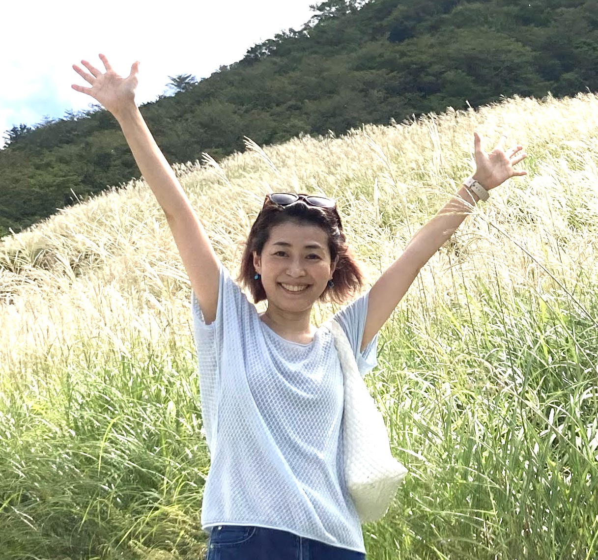

プロフィール

わが子の不登校を経験した母であり、ADHD当事者。その当事者性を原点に、発達障害や特性のある子どもたちも含めた「学校になじめない子が楽しく学べる」インクルーシブな学び場を10年かけてつくり続けてきた。
大学院修了後は、国際NGOの広報・支援者サービスに携わる。子どもが生まれてからは医療ライターとして論文執筆の協力などを行ってきた。しかし高1になる息子が小1の4月に不登校を経験。6月にフリースクールに在籍してから、学校になじまない子どもたちの居場所がほとんどないことを痛感。その年の10月に「居場所」だけにとどまらない学びを提供する「フリースクールIFラボ」を設立した。2026年10月に10年目を迎える。
「居場所」としてのフリースクールが主流であるなか、IFラボでは毎週「添削のない楽しい作文」授業をはじめ、プロジェクト学習のカリキュラムを独自につくって運営している。模擬裁判・動物との共生・好きなものプレゼン・北海道旅行に向けたアイヌ探求・ショート映画づくり・吉祥寺探検など、子どもたちの好奇心が学びの出発点になっている。
医療ライターとしても、発達障害ポータルサイトや育児マンガへの解説コラムを執筆。秋田書店の漫画サイト「souffle」では数年にわたって人気記事上位を独占することもあった。不登校新聞でも不登校当事者へのインタビュー記事を執筆。
子どもたちの学び支援だけでなく、母親支援も積極的に行っている。応用行動分析学を活用した「ABAペアレントトレーニング」をはじめ、「不安講座」や「至らないと思ってしまう自分に寄り添う会」などを開催。子どもが不登校でも発達障害があっても、まず母親が「自分らしく自分の人生を生きる」ことを大切にしている。
好奇心への多動という恩恵により、多趣味。フルートのほか、近年は弾き語りに挑戦中。50歳デビューを弾き語りの先生とともに目指している。
メディア実績・活動
フリースクールIFラボ
カリキュラムのあるフリースクールとして、のべ100名の子どもたちにインクルーシブな学びの場を提供。2026年10月に10年目を迎える。
医療ライター
発達障害ポータルサイト・秋田書店「souffle」・不登校新聞など、発達特性に関する記事を多数執筆。人気記事上位を独占した実績も。
ABAペアレントトレーニング
応用行動分析学をもとに、子育てに悩む母親向けの支援プログラムを提供。「不安講座」「自分に寄り添う会」なども開催。